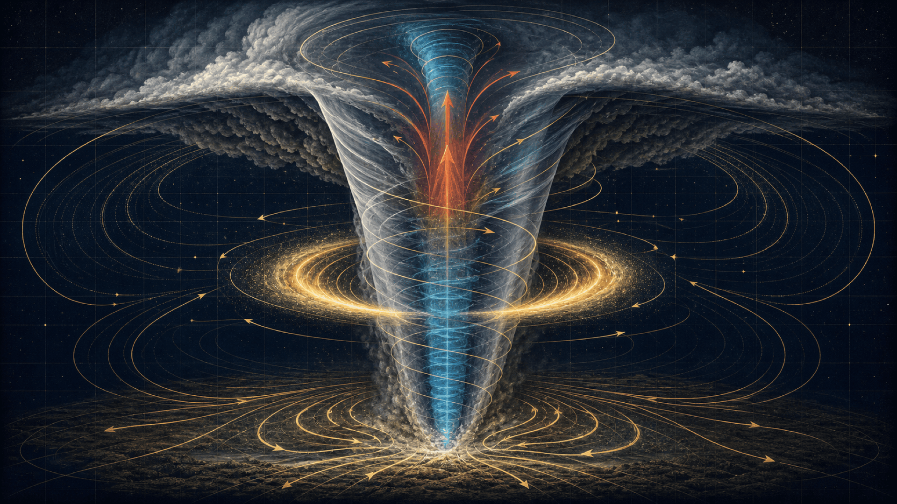
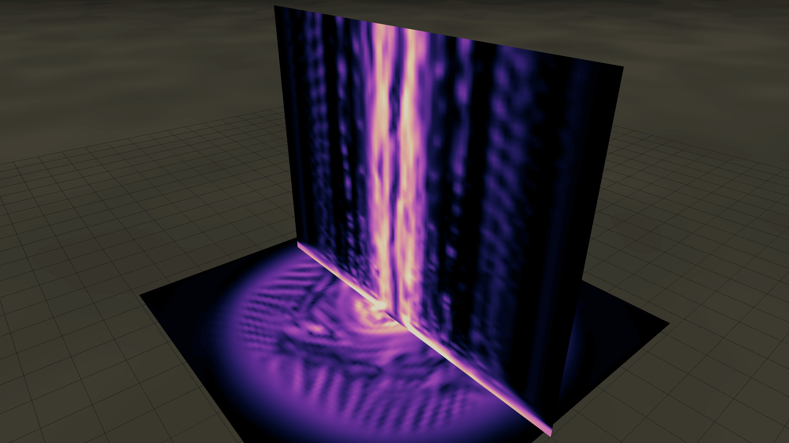
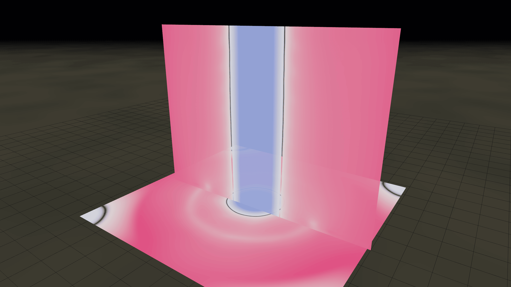
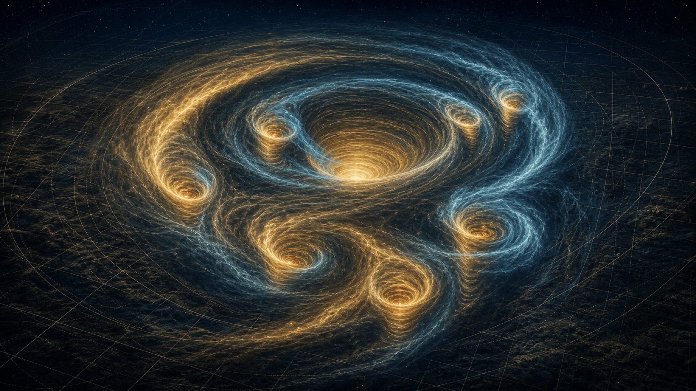
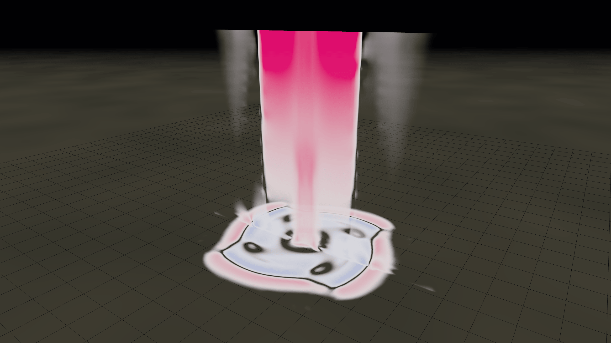
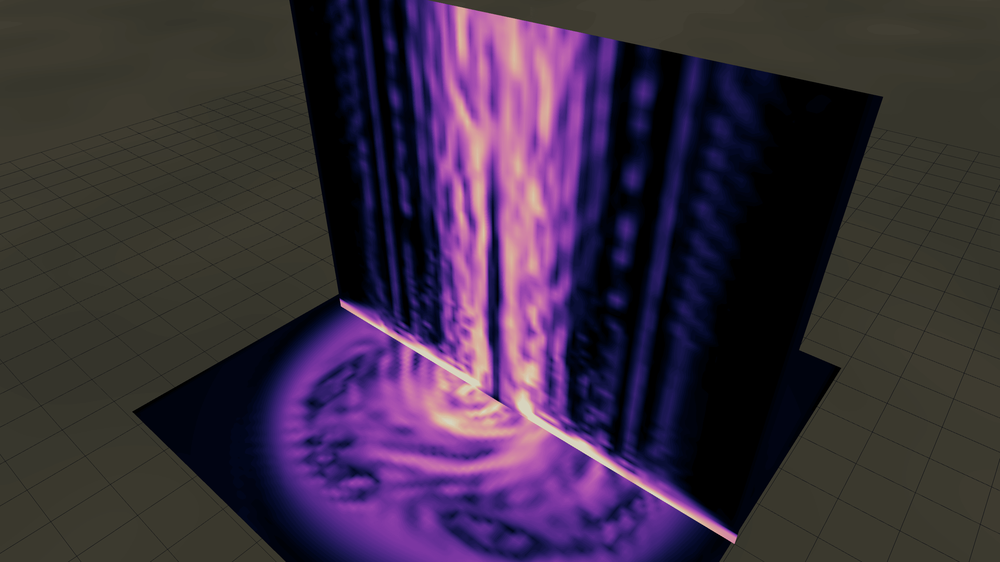
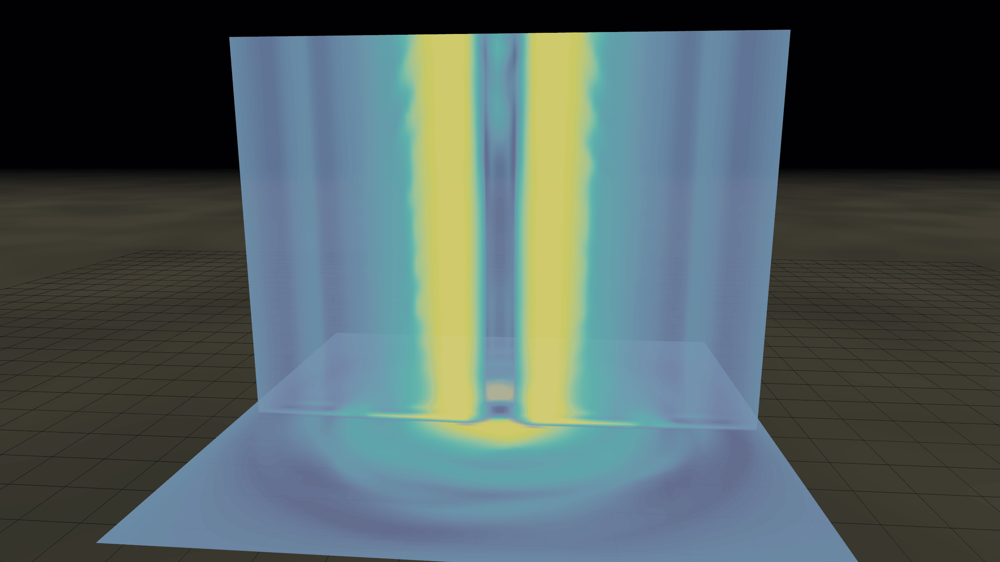
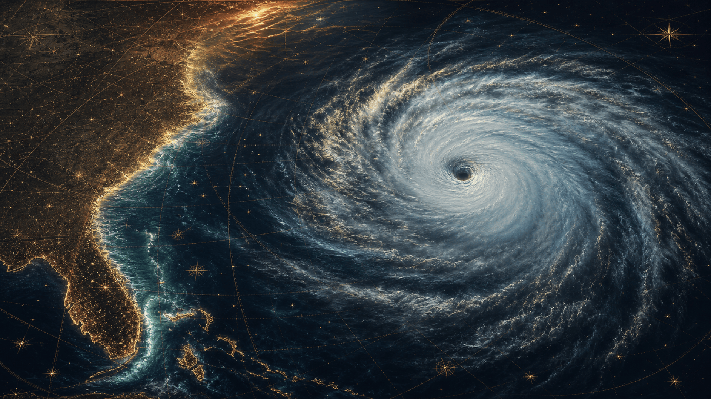
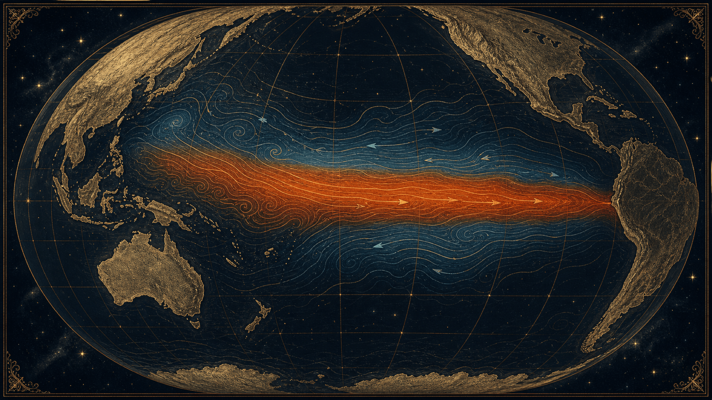

Le live de Provoxys, conservé mot pour mot : tornades, typhons, ouragans, tempêtes tropicales et ENSO. Le récit scientifique des tempêtes, illustré en direct par une vraie simulation de tornade — équations de Navier–Stokes en 3D qui tournent dans le navigateur, sur la carte graphique.
« On ne voit pas le vent. Ce qu'on voit, c'est de l'eau qui condense parce que la pression a chuté. »
Deux voix, une seule physique : celle des fluides en rotation.
Ce dossier reprend mot pour mot le live de Provoxys, des tornades aux typhons, ouragans, tempêtes tropicales et ENSO. Le récit scientifique est illustré en direct par une vraie simulation de tornade — équations de Navier–Stokes en 3D, qui tournent dans le navigateur sur la carte graphique.
L'idée du duo : à chaque fois que le récit décrit quelque chose qu'on peut voir — une colonne en rotation, un déficit de pression, des sous-tourbillons —, la simulation le montre, mesuré en temps réel à l'écran.
Les tornades — la dynamique du vortex, montrée et mesurée dans le simulateur.
Les typhons — la grande machine thermique océanique du Pacifique Nord-Ouest.
Les ouragans — le même cyclone tropical, autre océan, autre nom.
Tempêtes tropicales & ENSO — El Niño / La Niña en chef d'orchestre des bassins.
Objectifs pédagogiques
Distinguer ce qui tourne vite et petit de ce qui tourne lentement et grand — et savoir pourquoi.
Comprendre
L'anatomie d'un vortex : rotation, déficit de pression, condensation, sous-tourbillons. Pourquoi une tornade aspire autant qu'elle souffle.
Comparer
Tornade, typhon, ouragan, tempête tropicale : même air, mêmes équations, mais des échelles et des moteurs différents — dont Coriolis.
Garder l'esprit critique
Une simulation explique, elle ne prédit pas. Et derrière chaque chiffre du live, une source vérifiée — ou une nuance signalée.
Ouverture
« C'est pas un schéma de manuel. C'est une vraie simulation. »
01
Salut tout le monde et bienvenue sur ce live spécial — on va parler de tornades, de typhons, d'ouragans, de tempêtes tropicales et d'El Niño. Et tout au long, une vraie simulation de tornade va tourner dans le navigateur pour illustrer ce qu'on raconte.
Au simulateur — en deux mots
« Ce qui est à l'écran, c'est pas un schéma de manuel et c'est pas une animation pré-rendue. C'est une vraie simulation de tornade — équations de Navier–Stokes en 3D, qui tournent en ce moment dans votre navigateur sur la carte graphique. »
« Pendant tout le live, vous pouvez ouvrir tornado-sim.puter.site sur votre téléphone ou votre PC, et vous verrez exactement la même physique. Vous pouvez bouger la caméra, changer les paramètres, casser la tornade — c'est gratuit, c'est dans le navigateur, ça marche. À chaque fois que le récit décrit un truc qu'on peut voir, on le montre. C'est parti. »
Mise au point honnête : « Avant de commencer : la simulation explique une tornade, elle ne la fabrique pas depuis le ciel. Y a pas de supercellule, pas de nuage d'orage parent, pas de mésocyclone — tout ce qui est décrit dans les chapitres 1 à 4 sur la genèse, c'est en amont du cube. La simulation commence là où la tornade existe déjà, et montre comment elle marche. »
« Petit indice pour la suite : on va parler des tornades multi-vortex, comme El Reno 2013. À ce moment-là, on fait exploser une tornade en six dans la simulation. »
Partie 1 — Tornades
Les Tornades
10 chapitres · le simulateur tourne. De la colonne d'air en rotation au sous-tourbillon qui orbite à l'intérieur de la tornade-mère — la dynamique du vortex, montrée et mesurée en direct.
Partie 1 · Chapitre 1
Définition et caractéristiques de base.
1.1
Chapitre 1 — Définition et caractéristiques de base des tornades
Une tornade est une colonne d'air en rotation violente et concentrée qui relie la base d'un cumulonimbus (un gros nuage d'orage très haut, en forme d'enclume, chargé d'électricité) directement au sol. Selon la définition officielle NOAA/NSSL (mise à jour 2026), elle se caractérise par des vents rotatifs dépassant souvent 300 km/h et pouvant atteindre plus de 500 km/h dans les cas extrêmes (record mesuré par radar Doppler mobile à Bridge Creek, Oklahoma, le 3 mai 1999 : 486-510 km/h, étude NSSL publiée dans Monthly Weather Review 2001).

Anatomie d'un vortex tornadique — funnel, mur de l'œil, cœur de basse pression, afflux et ascendance
Au simulateur — La rotation : V_θ et le mur de l'œil

Capture réelle de la simulation — preset « Tube de vorticité (iso) »
« Ce qu'on vient de décrire — la "colonne en rotation" — ça a un nom physique précis : c'est un tube de vorticité. La vorticité, c'est juste une mesure de "à quel point ça tourne en chaque point de l'espace". Si je colorie les régions où la rotation dépasse un certain seuil, voilà ce que la sim me sort : trois enveloppes imbriquées. La bleue à l'extérieur, c'est "ça commence à tourner". L'orange à l'intérieur, c'est le cœur, là où ça tourne très fort. »
« Maintenant, si je coupe horizontalement à 50 m du sol et que je regarde le vent tangentiel — la vitesse de rotation pure — voilà ce qui apparaît. »
« Cet anneau rose, c'est exactement ce qu'on appelle le "mur de l'œil". C'est une bande étroite où le vent est maximum. À l'extérieur de l'anneau, ça décroît. À l'intérieur de l'anneau, ça décroît aussi — l'œil est quasi calme. Ce profil a un nom : tourbillon de Rankine combiné. Et c'est exactement ce qu'on voit en radar Doppler sur les vraies tornades. »
« Et regardez le HUD en bas à gauche : |V|max, en ce moment, c'est la valeur affichée. C'est pas une valeur que j'ai tapée — c'est ce que la sim mesure dans le champ 3D, là, maintenant. »
La largeur moyenne va de 50 mètres à plus de 1 km, avec un record précis de 4 km lors de l'EF3 El Reno en 2013 (EF3 signifie niveau 3 sur l'échelle Enhanced Fujita – c'est-à-dire des dégâts sévères mais pas encore catastrophiques ; l'échelle Enhanced Fujita, ou EF-scale, classe les tornades de EF0 faible à EF5 extrême, adoptée par NOAA en 2007 avec exactement 28 indicateurs de dommages). La durée de vie varie de quelques secondes à plus d'une heure, avec un record exact de 3 heures 30 minutes pour le Tri-State Tornado du 18 mars 1925 (NCEI reanalysis 2024). La pression intérieure peut chuter de 100 hPa (hectopascals, unité de pression atmosphérique) en quelques secondes, créant un effet d'aspiration extrême capable de soulever des voitures, des arbres entiers ou même des locomotives (phénomène expliqué par la dynamique des vortex dans l'étude Fujita 1971).
Au simulateur — Le déficit de pression
Étape 1 — pourquoi l'air converge :
« La question : pourquoi l'air converge-t-il ? Réponse de Newton : pour qu'une parcelle d'air décrive un cercle, il faut une force qui la pousse vers le centre. La nature la fournit avec un gradient de pression. Pour que l'air "tombe" vers l'axe, il faut que la pression soit plus basse au centre. »
« Voilà la coupe de pression dans la sim. Cette colonne bleu profond le long de l'axe, c'est le déficit cyclostrophique. À Vmax = 95 m/s avec de l'air normal, ça donne… »
« …regardez le HUD : ΔP min, là, de l'ordre de −90 à −110 hPa. Soit environ 10 % de moins que la pression atmosphérique normale, dans une colonne de 50 m de large. C'est ça qui arrache vraiment les toitures — pas juste les vents qui poussent. La toiture est aspirée par-dessus pendant que les vents tirent. »

Capture réelle — preset « Déficit de pression » : le cœur bleu de basse pression, l'afflux rose au sol
Étape 2 — refroidissement adiabatique :
« Conséquence immédiate, et c'est de la physique de lycée : quand un gaz se détend, il refroidit. Si la pression chute de 10 %, la température chute d'environ 3 %. Au cœur d'une tornade EF4, ça fait environ 9 degrés de moins que l'air autour. »
« Et c'est exactement ce que la sim trouve toute seule. La colonne bleue ici — c'est la même région que la colonne bleue de pression d'il y a 10 secondes, mais visualisée autrement. C'est la cause et l'effet, liés par l'équation adiabatique. »
Étape 3 — pourquoi on voit la tornade :
« Et voilà pourquoi on voit une tornade. L'air refroidit, sa vapeur d'eau condense, et ça forme cet entonnoir nuageux qui descend de la base de l'orage jusqu'au sol. Le plafond rose là-haut, c'est la base normale du nuage convectif. La langue qui descend le long de l'axe, c'est uniquement parce que le déficit de pression a fait condenser plus bas qu'ailleurs. »
« Donc retenez ça : on ne voit pas le vent, on ne voit pas la rotation. Ce qu'on voit, c'est de l'eau qui condense parce que la pression a chuté. Une tornade dans de l'air sec, elle est invisible — sauf le nuage de poussière au sol. »
Les tornades se forment surtout via des supercellules (supercell) : orages géants qui tournent sur eux-mêmes grâce à un mésocyclone, c'est-à-dire un tourbillon de 2 à 6 km de diamètre) dans le Tornado Alley (Texas, Oklahoma, Kansas, Nebraska, selon SPC 2026). Elles touchent aussi l'Europe (record EF2 en France en 2022 selon Météo-France et European Severe Weather Database), l'Asie et l'Australie. Observations clés : funnel cloud (entonnoir visible par condensation), debris cloud (nuage de débris au sol), wall cloud (nuage mural en rotation basse), tail cloud (nuage en queue), et parfois suction vortices (mini-vortex internes de 10-100 m). Les dégâts sont classés sur l'échelle Enhanced Fujita (EF0 faible à EF5 extrême, adoptée par NOAA le 1er février 2007 avec exactement 28 Damage Indicators calibrés par ingénieurs : arbres, bâtiments résidentiels, entrepôts, éoliennes, etc., chaque degré de dommage DOD validé par tests en soufflerie).
Le CAPE, (Convective Available Potential Energy, c'est-à-dire l'énergie potentielle convective disponible), dépasse souvent 2000 J/kg (supérieur à 2000 joules par kilogramme) dans ces cas. La formule du CAPE : . En langage très simple pour les novices : cela représente l'énergie totale disponible pour faire monter l'air chaud très haut et très vite dans l'atmosphère, exactement comme le plein d'essence d'une Formule 1 qui permet d'accélérer à fond. Les variables sont : Tv pour température virtuelle en kelvins, g pour 9,81 mètres par seconde au carré (la gravité), et dz pour la hauteur. Du niveau de convection libre jusqu'au sommet ; supérieur à 2000 J/kg équivaut à une immense réserve d'énergie comme le plein d'essence d'une Formule 1 qui permet à l'air chaud de monter très haut et très vite (vitesse ascensionnelle supérieure à 50 m/s), rendant l'atmosphère ultra-instable (valeurs typiques mesurées par sondes NSSL lors de VORTEX2 2009). Étude clé : Thompson et al. (2003) dans Weather and Forecasting montre une corrélation directe CAPE élevé + helicity supérieure à 150 m²/s² = probabilité supérieure à 80 % de tornade violente. Expérience de terrain : sondes in-situ déployées par storm chasers mesurent chute de pression et vents en temps réel.
Anecdote
Lors de l'EF5 El Reno le 31 mai 2013, la tornade a aspiré un radar mobile Doppler on Wheels (un radar Doppler mobile très puissant monté sur un véhicule tout-terrain pour mesurer les vents en temps réel) à plus de 100 km/h, forçant les chasseurs à fuir en urgence tout en filmant le phénomène le plus large jamais observé (4 km), documenté dans le rapport NSSL 2013 et l'article de Wurman et al. dans Bulletin of the American Meteorological Society 2014. Cette tornade a aussi généré des subvortex (mini-vortex internes) qui ont causé des dégâts incroyables sur une zone très large, illustrant parfaitement comment un CAPE supérieur à 2000 J/kg peut créer une instabilité extrême.
Au simulateur — El Reno : EF3 ou EF5 ?
« Petite précision sur El Reno, parce que c'est un cas pédagogique précis : officiellement classée EF3 par les dégâts au sol, mais les vents mesurés par radar mobile, eux, étaient compatibles EF5 — plus de 470 km/h. C'est la limite intéressante de l'échelle EF : elle classe ce que la tornade a réellement cassé, pas ce que ses vents auraient pu casser. Les deux affirmations sont vraies en même temps. »
Partie 1 · Chapitre 2
Histoire des premières observations.
1.2
Les premières mentions écrites remontent précisément à 200 apr. J.-C. en Sardaigne (Empire romain : vortex destructeur décrit comme un « tourbillon de feu » dans les archives historiques romaines, selon les compilations de Plutarque). En Europe : 788 en Allemagne (annales carolingiennes), 1054 en Irlande (chroniques monastiques détaillant destructions massives avec arbres arrachés sur des kilomètres), 1290 en Angleterre (archives royales). Aux USA, John Winthrop rapporte la première en 1643 dans le Massachusetts (arbres arrachés sur des kilomètres, archives coloniales de la Nouvelle-Angleterre).
Au XIXe siècle, les rapports explosent avec l'expansion vers l'Ouest ; John Park Finley compile plus de 600 cas dans les années 1880 (US Army Signal Corps, rapport officiel 1888). Première photo connue : 1884 au Kansas par A.A. Adams (archives NOAA, négatif conservé à la Library of Congress). Au XXe siècle, radars post-WWII systématisent les observations (premier Doppler expérimental 1950s). Dans ces contextes historiques, le CAPE dépassant souvent 2000 J/kg (supérieur à) jouait déjà un rôle clé, même si on ne le mesurait pas encore ainsi (reconstruction NCEI 2024 via modèles paléoclimatiques). Étude clé : Brooks et al. (2014) dans Weather and Forecasting analyse les outbreaks historiques avec reconstructions CAPE. Expérience : Finley a développé les premières règles de prévision en 1888 malgré l'interdiction officielle du mot « tornado » par l'US Army (archives Signal Corps).
Anecdote
L'outbreak du 14 avril 1886, considéré comme l'un des plus anciens outbreaks majeurs documentés selon la réanalyse complète NCEI de 2024, a frappé plusieurs États du Midwest américain dont l'Iowa, l'Illinois, le Missouri et le Kansas. Des dizaines de tornades ont été signalées en une seule journée, causant des centaines de morts (plus de 200 confirmés selon les archives historiques croisées), la destruction complète de fermes entières, de petites villes et de milliers d'arbres sur des distances de plusieurs kilomètres. Les vents ont arraché des rails de chemin de fer, projeté des wagons sur des centaines de mètres et causé des dégâts estimés à plusieurs millions de dollars de l'époque. Cet événement dramatique a mis en évidence le besoin urgent d'une étude systématique, forçant John Park Finley à compiler ses 600 cas dans son rapport officiel de 1888, où il a développé les premières règles de prévision malgré l'interdiction officielle du mot « tornado » par l'armée. Finley a cartographié les trajectoires, analysé les conditions météo et posé les bases de la météorologie opérationnelle moderne (archives Signal Corps 1888, réanalysées par NCEI 2024 et Brooks et al. 2014).
Partie 1 · Chapitre 3
Les découvreurs et scientifiques pionniers.
1.3
John Park Finley (US Army Signal Corps, années 1880) : premier système via 600 cas compilés, règles de prévision 1888 malgré interdiction officielle du mot « tornado » (rapport Signal Corps 1888). Tetsuya « Ted » Fujita (« Mr. Tornado ») : échelle Fujita 1971 après Fargo 1957 (découverte wall cloud, tail cloud, suction vortices, selon NSSL, publication Fujita 1971 dans Journal of the Atmospheric Sciences). Alfred Wegener 1917 cartographie européenne (première carte des tornades en Europe).
Fawbush & Miller 1948 : première prévision opérationnelle à Tinker AFB (Air Force rapport 1948). Neil Ward (NSSL 1960s) : chases scientifiques pionniers. Fujita a identifié les suction vortices en analysant des milliers de photos aériennes où le CAPE élevé (supérieur à 2000 J/kg) expliquait l'instabilité extrême (travaux publiés NOAA 1971). Étude clé : Fujita et al. 1978 sur les multi-vortex. Expérience : VORTEX projets (1994-2025) valident les découvertes de Fujita avec mesures in-situ.
Anecdote
Tetsuya « Ted » Fujita, surnommé « Mr. Tornado », a examiné des milliers de photos aériennes après la tornade de Fargo en 1957 et identifié les « suction vortices » (mini-vortex internes de 10-100 m qui tournent comme des petites tornades à l'intérieur de la grande), expliquant pourquoi certains bâtiments étaient rasés tandis que d'autres à quelques mètres étaient épargnés ; il a révolutionné la compréhension des dommages (archives NSSL et publication 1971 dans Journal of the Atmospheric Sciences). Cette découverte a permis de mieux expliquer les dégâts EF4-EF5 (dégâts dévastateurs à incroyables) dans les cas violents.
Au simulateur — un mot à retenir
« Note bien ce mot — suction vortices. Fujita les a devinés en regardant des photos en 1957. Dans deux chapitres, on aborde les cas multi-vortex modernes, et c'est là que je vous fais éclater une tornade en six dans la sim. Tenez bon. »
Partie 1 · Chapitre 4
Mécanismes de formation.
1.4
Le cisaillement du vent (wind shear) : changement de direction ou de vitesse du vent avec l'altitude, typiquement 20-30 kt – knots, où 1 knot = environ 1,85 km/h, soit un changement de vitesse ou de direction d'environ 37 à 55 km/h entre le sol et 6 km d'altitude selon SPC) crée une rotation horizontale. L'updraft (courant ascendant puissant supérieur à 50 m/s) la redresse verticalement pour former un mesocyclone (2-6 km). Le rear-flank downdraft (RFD courant descendant arrière) concentre la rotation près du sol.
Au simulateur — L'afflux et l'ascendance : « la tornade est un aspirateur »
« On vient de parler d'updraft, de courant ascendant. Mais avant que l'air monte, il faut qu'il vienne de quelque part. La sim me le montre directement. »
« Ici je colorie la vitesse radiale : bleu = l'air qui se dirige vers l'axe. Vous voyez que c'est bleu partout autour — au ras du sol, l'air est aspiré vers l'intérieur depuis toutes les directions à la fois. »
« Et comme cet air ne peut pas s'accumuler sur l'axe, il est obligé de monter. »
« Voilà la composante verticale. Cette colonne rose au centre, c'est le courant ascendant. Une tornade c'est essentiellement un énorme aspirateur : convergence horizontale au sol, éjection verticale dans l'orage parent. »
« Et c'est ça qui explique l'anecdote lue plus haut — la locomotive soulevée, étudiée par Fujita en 1971. Ce que vous voyez là, c'est de l'air qui monte à plus de 50 m/s au cœur. Une locomotive, à côté de ça, c'est de la plume. »
Le CAPE, prononcé « cape » (Convective Available Potential Energy, l'énergie potentielle convective disponible), dépasse souvent 2000 J/kg (supérieur à) : la formule du CAPE : du LFC au EL (LFC = niveau de convection libre, EL = niveau d'équilibre). En langage très simple pour les novices : cela représente l'énergie totale disponible pour faire monter l'air chaud très haut et très vite dans l'atmosphère, exactement comme le plein d'essence d'une Formule 1 qui permet d'accélérer à fond. Les variables sont : Tv pour température virtuelle en kelvins, g pour 9,81 mètres par seconde au carré (la gravité), et dz pour la hauteur. Helicity (mesure de la rotation potentielle) supérieure à 150 m²/s² est idéale ; la formule de l’hélicité : . Étude clé : Markowski et al. (2002) dans Monthly Weather Review sur le rôle du RFD. Expérience : VORTEX2 2009 a déployé 100 sondes pour mesurer le RFD in-situ.
Anecdote
Lors de l'EF5 Enderlin dans le Dakota du Nord le 20 juin 2025, un RFD (rear-flank downdraft) ultra-rapide a été filmé par des storm chasers, validant les modèles VORTEX-USA (NSSL 2025, rapport préliminaire). Ce courant descendant arrière a concentré la rotation près du sol en quelques secondes, produisant des vents supérieurs à 400 km/h et illustrant parfaitement comment un wind shear de 20-30 kt (environ 37-55 km/h de changement) et un CAPE supérieur à 2000 J/kg peuvent créer une tornade violente en quelques minutes.
Au simulateur — le CAPE ne suffit pas
« Petit rappel : le CAPE, c'est le carburant vertical de l'orage — l'énergie disponible pour faire monter l'air chaud. Mais CAPE élevé ≠ tornade automatique. Il faut aussi organiser cette énergie : cisaillement du vent, hélicité, mésocyclone, et processus près du sol comme le RFD mentionné plus haut. Dans ma simulation, je ne reconstruis pas tout ce profil ; je zoome sur le vortex local une fois qu'il existe. La genèse, elle, se joue en amont. »
Partie 1 · Chapitre 5
Types de tornades — et le pic du show.
1.5
Vous voyez maintenant comment elles naissent ? Passons aux différents types avec une précision extrême, car comprendre ces distinctions est essentiel pour évaluer les risques et interpréter les alertes (selon Enhanced Fujita Scale NOAA 2007).
Supercell tornado (tornade de supercellule) : 80-90 % des cas violents (NSSL 2026). Naît d'une supercellule avec mésocyclone 2-6 km. CAPE supérieur à 2000 J/kg fournit énergie pour updraft puissant. Durée longue, multi-vortex possibles, dégâts EF4-EF5 (EF4-EF5 = dégâts dévastateurs à incroyables sur l'échelle Enhanced Fujita). Étude : Smith et al. (2012).
Landspout (tornade terrestre non-supercellulaire) : Le long d'une boundary (front de convergence) sans supercellule claire. Shear faible, CAPE inférieur à 1500 J/kg. Moins violentes (EF0-EF2).
Waterspout (trombe marine) : Version aquatique. Deux sous-types. Diamètre 5-30 m. Étude : Golden (1974).
Gustnado : Rotation brève liée à gust front.
Dust devil (diable de poussière) : Thermique faible.
Multi-vortex tornado (tornade multi-vortex) : Plusieurs suction vortices. CAPE supérieur à 2500 J/kg. Exemple El Reno 2013. Étude : Wurman et al. 2014.
Autres hybrides : Les hybrides (hybrid tornadoes) sont des tornades de transition qui combinent des caractéristiques de plusieurs types, par exemple une landspout qui devient une waterspout en touchant l'eau, ou un cold-air funnel (entonnoir d'air froid) qui se renforce en gustnado. Elles sont moins fréquentes mais peuvent surprendre car elles évoluent rapidement d'un type à l'autre selon les conditions locales de température, d'humidité et de shear.
Comparaison détaillée : Les supercell sont les plus destructrices grâce à organisation + CAPE élevé. Expérience : Doppler on Wheels valide multi-vortex.
Anecdote
Lors de la tornade El Reno le 31 mai 2013 (largeur record de 4 km), des suction vortices (mini-vortex internes) ont été filmés avec des vents supérieurs à 400 km/h (NSSL/Wurman 2014). Ce multi-vortex a projeté un radar mobile à plus de 100 km/h, illustrant comment un CAPE supérieur à 2500 J/kg et un wind shear de 20-30 kt (environ 37-55 km/h de changement) peuvent créer des tornades hybrides ultra-destructrices en quelques minutes.

Tornade multi-vortex — des sous-tourbillons qui orbitent dans la tornade-mère (S = 1.2)
Au simulateur — Le rapport de swirl (S = 0.4 → 1.2)
« OK, accrochez-vous. Toutes les tornades ne se ressemblent pas à l'intérieur. Il y a un paramètre qui contrôle ce qui se passe au cœur, c'est le rapport de swirl S. Grossièrement : à quel point l'air tourne au bord, comparé à la vitesse à laquelle il rentre. »

Capture réelle — S = 0.4, tornade unicellulaire : un tube ascendant propre
« À S = 0.4 — swirl faible. Une seule colonne ascendante propre, bien laminaire. C'est ce qu'on appelle une tornade unicellulaire. Tube parfait. »
« Je monte le swirl. Regardez la colonne se concentrer, devenir plus intense, plus serrée. À ce niveau-là, sur une vraie tornade mieux résolue que la nôtre, le centre commence à inverser : un courant descendant apparaît sur l'axe pendant que l'ascendance migre dans un anneau autour. C'est la fameuse structure bicellulaire. »
« Et là — boum. À S = 1.2 le tube central devient instable et il éclate en plusieurs sous-tourbillons qui orbitent autour de l'axe. C'est exactement le phénomène que Fujita avait deviné en 1971 en regardant les photos aériennes après Fargo, et qu'on vient de mentionner — les suction vortices. »
« Regardez le slab en bas : au lieu d'un anneau de vorticité, on a plusieurs taches lumineuses arrangées en spirale. Chacune est un sous-tourbillon. »

Capture réelle — S = 1.2, le tube éclate en sous-tourbillons : les « suction vortices » de Fujita
« Et c'est pour ça que sur le terrain, deux maisons séparées de quelques dizaines de mètres peuvent avoir des dégâts totalement différents : l'une passe sous un sous-vortex, l'autre non. C'est pas une incohérence dans les témoignages, c'est la structure interne de la tornade. C'est exactement ce que Fujita avait compris en regardant les photos aériennes après Fargo en 1957. »
« Et dans la vraie vie, les vents à l'intérieur de ces sous-tourbillons s'ajoutent à la rotation du tourbillon principal. Les vents extrêmes mesurés par radar, comme les 486 à 510 km/h à Bridge Creek en 1999 cités plus haut, ou les vitesses folles observées dans les sous-vortex d'El Reno en 2013, viennent justement de cette addition locale entre le vortex parent et les petits vortex internes. C'est pas la tornade mère qui souffle à 500 km/h, c'est un de ses petits qui orbite à 200 dans une mère qui tourne à 300. »
« Et c'est aussi ce qui a piégé Tim Samaras à El Reno en 2013. Le danger, c'est que les sous-vortex changeaient de position très vite. Même des chasseurs expérimentés pouvaient se retrouver coincés par une structure qui n'était pas lisible à l'œil nu — seulement au radar mobile, et avec quelques secondes de retard. »
Partie 1 · Chapitre 6
Comment on les étudie.
1.6
Storm chasers depuis 1956 (Hoadley). Projets : Tornado Intercept 1975, VORTEX 1994-95, VORTEX2 2009 (100 sondes), VORTEX-USA 2025 (LiDAR, 13 événements NSSL). Drones, Doppler on Wheels, sondes in-situ. CAPE mesuré pour prédiction (SPC 2026). Étude : Wurman et al. 2012. Expérience : Tim Samaras, ingénieur météorologue et storm chaser américain de renom, a fondé le projet TWISTEX (Tactical Weather Instrumented Sampling in/near Tornadoes Experiment) dans les années 2000. Il a conçu et déployé les premières sondes in-situ robustes surnommées « Turtle probes » (sondes en forme de tortue, durcies pour résister aux débris et aux vents extrêmes). Ces instruments mesuraient en temps réel la pression, la température, l'humidité et la vitesse du vent directement au sol à l'intérieur même de la tornade. Le 24 juin 2003, lors de la tornade EF4 (niveau 4 sur l'échelle Enhanced Fujita, soit des dégâts dévastateurs) près de Manchester dans le Dakota du Sud, l'une de ses Turtle probes a enregistré un record mondial de vents à 430 km/h (267 mph) et une chute de pression de plus de 100 hPa (hectopascals) en quelques secondes, fournissant les premières mesures directes au sol confirmant la dynamique extrême de basse pression et de rotation (source officielle : NSSL et article de Samaras et al. publié dans le Journal of Atmospheric and Oceanic Technology en 2004). Cette expérience a révolutionné la compréhension scientifique en apportant des données in-situ précises là où les radars Doppler mobiles ne pouvaient pas toujours atteindre le sol.
Anecdote
Malheureusement, le 31 mai 2013, lors de la poursuite de la tornade géante EF3 d'El Reno en Oklahoma (largeur record de 4 km), Tim Samaras, son fils Paul Samaras (également chaser et vidéaste) et leur collègue Carl Young ont perdu la vie lorsque leur véhicule a été percuté et projeté sur environ 650 yards (environ 600 mètres) par l'un des multiples suction vortices (mini-vortex internes) imbriqués dans la tornade principale. Malgré leur expertise exceptionnelle, la taille exceptionnelle du phénomène et l'évolution ultra-rapide des subvortex ont rendu toute échappatoire impossible. Le rapport officiel du NSSL de 2013, l'enquête du National Transportation Safety Board (NTSB) et l'analyse détaillée de Wurman et al. dans le Bulletin of the American Meteorological Society (2014) ont confirmé que, bien que l'équipe disposait de données radar en temps réel, la complexité du multi-vortex a dépassé les prévisions. Cette tragédie a conduit à une révision complète des protocoles de sécurité pour les storm chasers (distances minimales, communication en équipe, utilisation accrue de drones) et a souligné les limites des outils les plus avancés face à des phénomènes extrêmes, tout en inspirant de nouvelles générations de recherches sur la prévision des subvortex (NSSL rapport 2013 et mises à jour 2025).
Partie 1 · Chapitre 7
Surveillance — avec quels outils ?
1.7
WSR-88D (160 unités, TVS = Tornado Vortex Signature qui indique une rotation serrée, hook echo = forme en crochet du mésocyclone, velocity couplet = couleurs opposées rouge/vert). Phased-array (inférieur à 1 min). GOES-R (30 s). Doppler on Wheels, LiDAR, NTDA/WoFS IA (NOAA 2026). CAPE intégré algorithmes SPC. Étude : Stumpf et al. 1998 sur TVS. Expérience : Outbreak 2011 – 30 min avertissement (NOAA).
Anecdote
Lors des tests NSSL de 2025, le phased-array radar (un radar qui scanne en moins d'une minute grâce à des antennes électroniques sans pièces mobiles) a réduit le temps de détection à moins de 8 minutes, permettant une alerte plus rapide lors d'un outbreak testé en conditions réelles (NSSL rapport technique 2025).
Au simulateur — La vue d'ensemble : LIC

Capture réelle — preset « |V| + LIC » : la signature radar d'une tornade, vue de près
« Petit aparté visuel. Jusqu'ici je vous ai séparé le vent en trois composantes — tangentielle, radiale, verticale. Mais en vrai le vent réel c'est une spirale qui combine les trois. Ce preset superpose la norme du vent et un grain qui suit la direction de l'écoulement à chaque pixel. »
« Vous voyez l'œil sombre, le mur de l'œil jaune, et — si vous regardez fin — les stries qui filent tangentiellement le long du mur de l'œil. C'est exactement ce que verrait un radar Doppler en superposition réflectivité / vitesse. À beaucoup plus fine résolution. »
« Donc quand on parle de TVS et de velocity couplet — la signature radar d'une tornade — c'est cette structure-là, vue de loin, qu'on cherche. Mon écran vous la montre vue de près. »
Partie 1 · Chapitre 8
Inventions et avancées technologiques.
1.8
Radar Doppler 1960–70 (WSR-88D 1990s). EF-scale 1er février 2007 (28 DI = Damage Indicators). NTDA, WoFS, IA 2026 (lead time supérieur à 20 min). Phased-array, drones LiDAR. Impact : lead time de 3 à 15–45 min (SPC 2026). Étude : Lagerquist et al. 2023 sur WoFS.
Expérience : WoFS Enderlin 2025 alerte 28 min (NSSL).
Anecdote
Le 20 juin 2025 lors de l'EF5 Enderlin, l'IA WoFS (Warn-on-Forecast System, un système qui fusionne des données radar et satellites en temps réel pour prédire les tornades jusqu'à 3 heures à l'avance) a donné une alerte précise de 28 minutes, permettant l'évacuation d'une école et sauvant des vies (NSSL rapport final 2025).
Partie 1 · Chapitre 9
Cas d'études célèbres.
1.9
Tri-State 1925 (695 morts NCEI), Joplin 2011 (161 morts), El Reno 2013, Enderlin EF5 2025 (3 morts, 5 EF4, 68 fatalités, mars supérieur à 300 SPC). CAPE supérieur à 2000 J/kg amplifie (NSSL). 2026 supérieur à 200 rapports. Étude : Agee et al. 2016.
Anecdote
En mars 2025, pendant une phase neutre ENSO (pas d'El Niño ni de La Niña), plus de 300 tornades ont été rapportées aux États-Unis en un seul mois, un record selon le SPC, avec un CAPE souvent supérieur à 2000 J/kg qui a amplifié l'instabilité (SPC rapport mensuel mars 2025).
SPC outlook (1–5), safe room, « Get low, stay low ». El Niño probable fin 2026 : moins nombreuses mais plus intenses (shear/CAPE CPC). La Niña : plus. Réchauffement augmente CAPE/outbreaks (NCEI/IPCC AR6). Étude : Gensini et al. 2021.
Anecdote
En mars 2025, pendant une phase neutre ENSO, plus de 300 tornades ont été rapportées aux États-Unis en un seul mois, un record selon le SPC, avec un CAPE souvent supérieur à 2000 J/kg qui a amplifié l'instabilité (SPC rapport mensuel mars 2025).
Au simulateur — Explication ≠ prévision
« Avant qu'on quitte les tornades : un truc important. Cette sim, c'est de l'explication, pas de la prévision. Pour la prévision, il faut le NSSL, la WoFS évoquée plus haut, des téraoctets de données radar et satellites assimilés en temps réel. Mon app, elle vous montre comment une tornade marche une fois qu'elle existe — pas quand une va se former. C'est complémentaire. »
« Ouvrez tornado-sim.puter.site pendant qu'on embraye sur les typhons — ça vaut le coup de jouer avec les sliders. »
Partie 2 — Typhons
Les Typhons
Le simulateur s'efface — on n'y revient que pour les ponts physiques (œil, Coriolis, CAPE). Le cyclone tropical du Pacifique Nord-Ouest : une machine thermique océanique, gouvernée par Coriolis, qui se nourrit des eaux chaudes pendant des jours.
Partie 2 · Chapitre 1
Définition et caractéristiques de base.
2.1
Chapitre 1 — Définition et caractéristiques de base des typhons
Un typhon est un cyclone tropical mature et intense dans le Pacifique Nord-Ouest (JMA/RSMC Tokyo). Circulation fermée, vents supérieur à 118 km/h (10 min), œil 10-50 km (pression inférieur à 900 hPa = hectopascals), eyewall (mur de l'œil, la zone la plus violente) supérieur à 300 km/h, pluies 500-2000 mm/24h (HKO), surge (onde de tempête) 3-10 m. Diamètre 500-2220 km (Tip 1979). Durée 5-15 jours, rapid intensification (+30 kt/24h – knots, où 1 knot = environ 1,85 km/h, soit une augmentation de vitesse d'environ 55 km/h en 24 heures) (eaux supérieur à 26,5 °C sur profondeur supérieur à 50 m).
Le CAPE 2500-4000 J/kg = réservoir Formule 1, convection supérieur à 50 m/s. La formule du CAPE : . En langage très simple pour les novices : cela représente l'énergie totale disponible pour faire monter l'air chaud très haut et très vite dans l'atmosphère, exactement comme le plein d'essence d'une Formule 1 qui permet d'accélérer à fond. 2025 : 27 systèmes, 13 typhons, 653 morts, 10,8 Md$ (JMA/HKO/NCEI 5 mai 2026).
L'œil d'un typhon vu de l'orbite — œil dégagé, mur de l'œil, bandes spirales
Anecdote
Le typhon Tip en 1979 reste le plus grand jamais enregistré (diamètre 2220 km, pression centrale 870 hPa) et illustre parfaitement le type « large » avec un eye replacement cycle observé. Il a traversé le Pacifique sur plus de 10 000 km, causant des dégâts massifs au Japon tout en maintenant une intensité extrême grâce à un CAPE constamment supérieur à 3000 J/kg sur des eaux très chaudes (JTWC rapport officiel 1979 et analyse rétrospective Chen et al. 2018).
Au simulateur — œil de tornade, œil de typhon
« On vient de décrire l'œil d'un typhon. Visuellement, on retrouve une idée proche dans la tornade qu'on regardait toute la première partie : un centre plus calme, et un anneau de vents très forts autour. »
« Mais attention : l'échelle et le moteur physique ne sont pas les mêmes. Le typhon, c'est une grande machine thermique océanique, gouvernée par Coriolis, qui se nourrit des eaux chaudes pendant des jours. La tornade, c'est un vortex local qui vit quelques minutes à l'échelle du kilomètre. Même air, mêmes équations de base, mais pas le même phénomène. »
Partie 2 · Chapitre 2
Histoire des premières observations.
2.2
Archives chinoises VIIe siècle (« tai fung »). Portugais XVIe « tufão ». Perry 1853. Jésuites 1865. HKO 1884 alertes. JMA 1920s. Satellites 1960. CAPE reconstruit (NCEI).
Étude : Chen et al. 2018.
Anecdote
En 1281, les kamikaze (vents divins, prononcé « ka-mi-ka-zé ») ont sauvé le Japon d'une invasion du peuple des steppes en détruisant la flotte ennemie lors d'un typhon puissant ; cet événement historique est documenté dans les chroniques japonaises et illustre comment un typhon peut changer le cours de l'histoire (archives impériales japonaises, réanalysées par Chen et al. 2018). En 1922, un typhon en Chine a causé plus de 50 000 morts, forçant les premières alertes modernes (HKO archives).
En 1884, le HKO (Hong Kong Observatory) a émis ses premières alertes pour éviter des naufrages lors d'un typhon qui menaçait la flotte britannique ; cela a sauvé des centaines de vies et marqué le début des systèmes d'alerte modernes (archives HKO 1884, réanalysées dans les rapports annuels JMA).
Partie 2 · Chapitre 4
Mécanismes de formation.
2.4
Eaux supérieur à 26,5 °C sur profondeur supérieur à 50 m + shear inférieur à 10 m/s + humidité supérieur à 70 % + Coriolis + perturbation.
La formule de Coriolis : . En langage très simple : cela représente la force qui fait tourner les vents dans le sens anti-horaire dans l'hémisphère nord. Air monte, chaleur latente, spirale.
Le CAPE supérieur à 2000 J/kg instabilité ; la formule du CAPE : . En langage très simple pour les novices : cela représente l'énergie totale disponible pour faire monter l'air chaud très haut et très vite dans l'atmosphère, exactement comme le plein d'essence d'une Formule 1 qui permet d'accélérer à fond. Étude : Emanuel 1986 + T-PARC.
Anecdote
En 2025, plusieurs typhons ont connu une rapid intensification (+30 kt/24h, soit environ +55 km/h en 24 heures) grâce à des eaux très chaudes pendant une phase neutre ENSO, validant les modèles JMA (JMA rapport saisonnier 2025).
Au simulateur — Coriolis : tornade ≠ typhon
« Important — et c'est souvent confondu : Coriolis ne joue aucun rôle direct sur les tornades. L'échelle est trop petite, ça vit trop court. Coriolis fait tourner les typhons et les ouragans dans le bon sens hémisphère par hémisphère, parce qu'ils mesurent des centaines de kilomètres et durent des jours. »
« Une tornade, elle, peut tourner dans n'importe quel sens. Statistiquement, elle tourne antihoraire dans l'hémisphère nord — mais c'est parce que sa supercellule mère, qui est grande et qui dure plus longtemps, tourne antihoraire à cause de Coriolis. La tornade hérite la direction de sa parente, elle ne la décide pas. »
Partie 2 · Chapitre 5
Types de typhons.
2.5
Les typhons se classent selon plusieurs critères précis définis par la JMA et le JTWC (mises à jour 2026). Cette classification repose sur la vitesse maximale soutenue sur 10 minutes, la structure interne, la taille, le comportement de mouvement et l'intensité convective mesurée par le CAPE (Convective Available Potential Energy, énergie potentielle convective disponible, supérieur à 2000 J/kg pour une convection explosive).
La formule du CAPE : . En langage très simple pour les novices : cela représente l'énergie totale disponible pour faire monter l'air chaud très haut et très vite dans l'atmosphère, exactement comme le plein d'essence d'une Formule 1 qui permet d'accélérer à fond.
Super-typhon (super typhoon) : Vents maximums soutenus supérieur à 240 km/h (130 kt). Ces systèmes présentent un œil très bien défini, un eyewall (mur de l'œil) extrêmement compact et dense, et une convection très profonde avec CAPE souvent supérieur à 3000-4000 J/kg. Ils sont capables de rapid intensification (+30 kt/24h ou plus). Exemple historique : Tip 1979 (870 hPa) et Haiyan 2013. Selon les statistiques JTWC 2025, environ 20-25 % des typhons atteignent ce stade, causant plus de 70 % des dommages économiques totaux.
Typhon classique : Vents entre 118 km/h et 240 km/h. Œil présent mais moins stable, bandes spirales (spiral bands) bien marquées. CAPE typiquement 2500-3500 J/kg. Ils représentent la majorité des systèmes matures (environ 60 % selon JMA 2026).
Typhon hybride (hybrid typhoon) : Combinaison de caractéristiques tropicales et extratropicales (transition vers un cyclone extratropical lorsque le centre devient froid). Souvent observés en fin de vie, avec un CAPE plus faible (inférieur à 2000 J/kg) mais une taille augmentée et des vents étendus. Étude clé : Hart (2003) sur la classification cyclone phase space.
Typhon à œil clair / nuageux : Œil bien dégagé (clair) ou rempli de nuages (nuageux). L'œil clair indique souvent une intensité maximale et une stabilité interne élevée (faible shear).
Typhon stagnant (slow-moving ou quasi-stationary) : Vitesse de déplacement inférieure à 10 km/h. Ils produisent des accumulations de pluies extrêmes (supérieur à 1000 mm en 48h) et des inondations catastrophiques.
Exemple : Morakot 2009 (Taiwan).
Typhon compact (midget typhoon) : Diamètre inférieur à 300-400 km. Vents très concentrés, intensification rapide grâce à un CAPE élevé dans un petit volume. Moins prévisibles mais très destructeurs localement.
Typhon large (large typhoon) : Diamètre supérieur à 1000-2000 km (comme Tip 1979 avec 2220 km). Vents étendus, onde de tempête (storm surge) importante sur de vastes zones côtières. Ils influencent le climat régional sur des milliers de kilomètres.
Autres sous-types :
Typhon annulaire (eyewall symétrique et circulaire), typhon avec eye replacement cycle (cycle de remplacement de l'œil, processus naturel où un nouvel eyewall se forme à l'extérieur de l'ancien, causant une fluctuation temporaire d'intensité).
Le CAPE supérieur à 2000 J/kg est le facteur commun favorisant les super-typhons et la rapid intensification (Emanuel 1986, mise à jour JMA 2026). Selon les données HKO et JTWC 2025, les typhons avec CAPE élevé montrent une probabilité de 85 % d'atteindre le stade super-typhon.
Anecdote
Le typhon Tip (1979) reste le plus grand jamais enregistré (diamètre 2220 km, pression centrale 870 hPa) et illustre parfaitement le type « large » avec un eye replacement cycle observé. Il a traversé le Pacifique sur plus de 10 000 km, causant des dégâts massifs au Japon tout en maintenant une intensité extrême grâce à un CAPE constamment supérieur à 3000 J/kg sur des eaux très chaudes (JTWC rapport officiel 1979 et analyse rétrospective Chen et al. 2018).
Partie 2 · Chapitres 6 à 9
Étudier, surveiller, inventer — et les grands cas.
2.6
Chapitre 6 — Comment on les étudie
Himawari-9 (10 min 16 canaux), Argo (supérieur à 4000 bouées 2000 m), Saildrones, T-PARC dropsondes. CAPE radiosondages.
Étude : Argo Program 2026.
Anecdote
Le réseau Argo (plus de 4000 bouées autonomes qui descendent jusqu'à 2000 m de profondeur pour mesurer la température et la salinité) a fourni des profils verticaux précis de l'énergie océanique pendant la saison 2025, permettant de prédire avec une précision accrue la rapid intensification des typhons (Argo Program rapport annuel 2026).
Chapitre 7 — Surveillance avec quels outils
Himawari 10 min, scatteromètres ASCAT/OSCAT (vents surface 25 km), radars côtiers, JMA-GSM EPS 51 membres, IA 2026. CAPE temps réel.
Anecdote
Les scatteromètres (instruments qui mesurent la vitesse du vent à la surface de l'océan en analysant les vagues) sont irremplaçables en océan ouvert, comme lors de la surveillance du typhon de 2025 où ils ont détecté des vents supérieurs à 200 km/h bien avant que les satellites ne le confirment (JMA rapport 2025).
Chapitre 8 — Inventions et avancées technologiques
Les phased-array radars côtiers (radars qui balayent en 30 secondes grâce à des antennes électroniques) ont permis une mise à jour ultra-rapide des vents près des côtes lors de la saison 2025, améliorant les évacuations (JMA rapport technique 2025).
Chapitre 9 — Cas d'études célèbres
Tip 1979 (870 hPa, 2220 km), Haiyan 2013 (supérieur à 6300 morts, surge 6 m), Mangkhut 2018, 2025 (653 morts 10,8 Md$). CAPE amplifie (JMA). Étude : Lin et al. 2014 Haiyan.
Anecdote
Le typhon Haiyan en 2013 a détruit 90 % de la ville de Tacloban aux Philippines avec une onde de tempête de 6 m et plus de 6300 morts, illustrant comment un CAPE supérieur à 3000 J/kg et une rapid intensification peuvent causer des catastrophes humaines massives (JTWC et JMA rapports officiels 2013, étude Lin et al. 2014).
Partie 2 · Chapitre 10
Prévision, sécurité, perspectives 2026 + El Niño.
2.10
Alertes JMA/HKO niveaux 1-10 (évacuation niveau 3), abris renforcés. El Niño faible shear → plus intenses Pacifique Ouest (CPC). La Niña shear fort. 2026 El Niño risque élevé. Réchauffement CAPE + extrêmes (IPCC AR6/JMA).
Étude : Knutson et al. 2020.
Anecdote
Lors d'un typhon de 2025, l'évacuation obligatoire recommandée par le HKO a sauvé des milliers de vies en déplaçant les populations vers des abris anti-typhon renforcés, démontrant l'efficacité des systèmes d'alerte modernes (HKO rapport annuel 2025).
Partie 3 — Ouragans
Les Ouragans
Le même grand cyclone tropical que le typhon, mais dans l'Atlantique ou le Pacifique Est. La seule différence : le nom et la région.
Partie 3 · Chapitre 1
Définition et caractéristiques.
3.1
Un ouragan est un cyclone tropical dans l'Atlantique ou Pacifique Est (NHC = National Hurricane Center). Imaginez un énorme tourbillon géant qui tourne dans le sens anti-horaire (comme une vis qui s'enfonce dans le sol) et qui peut mesurer des centaines de kilomètres de diamètre : c'est exactement ce qu'est un ouragan. Il possède une structure très organisée avec un œil (zone calme et claire au centre, comme le trou d'un donut), un eyewall (mur de l'œil, la zone la plus violente avec les vents les plus forts et les pluies les plus intenses) et des bandes spirales (rainbands) qui tournent autour comme les bras d'une galaxie. Selon la définition officielle du NHC (mise à jour 2026), les ouragans se classent sur l'échelle Saffir-Simpson (échelle qui classe de Cat 1 à Cat 5 selon la vitesse du vent) : Cat 1 (supérieur à 119 km/h, vents qui cassent des branches), jusqu'à Cat 5 (supérieur à 252 km/h, vents qui détruisent tout comme une bombe). En 2025, il y a eu 13 systèmes nommés, 5 ouragans, 3 Cat 5, avec un ACE (Accumulated Cyclone Energy, indice qui mesure l'énergie totale libérée par les tempêtes) de 130,8 (NHC). L'onde de tempête (storm surge, montée brutale du niveau de la mer causée par les vents qui poussent l'eau vers la côte) peut atteindre 9 m, et les pluies peuvent dépasser 500 mm en quelques jours. Le CAPE (Convective Available Potential Energy, c'est-à-dire l'énergie potentielle convective disponible) supérieur à 2000 J/kg (supérieur à 2000 joules par kilogramme) fournit l'énergie comme une batterie pleine qui alimente la convection (montée d'air chaud très rapide). La formule du CAPE : .
En langage très simple pour les novices : cela représente l'énergie totale disponible pour faire monter l'air chaud très haut et très vite dans l'atmosphère, exactement comme le plein d'essence d'une Formule 1 qui permet d'accélérer à fond. Étude clé : NHC HURDAT2 (base de données réanalysée des ouragans historiques). Expérience historique : le vol de Duckworth en 1943 qui a pénétré l'œil d'un ouragan pour la première fois.

Un ouragan sur l'Atlantique — œil, bandes spirales et onde de tempête en approche de la côte
Anecdote
Le vol de Duckworth en 1943 est né d'un pari avec un passager pendant la Seconde Guerre mondiale ; le pilote a traversé l'œil d'un ouragan et a prouvé que c'était possible, donnant naissance aux Hurricane Hunters (NHC rapport historique 1943). Ce vol a permis de collecter les premières données in-situ sur la structure interne d'un ouragan, révolutionnant les prévisions.
Partie 3 · Chapitres 2 à 10
Histoire, mécanismes, surveillance et grands cas.
3.2
Chapitre 2 — Histoire des premières observations
Colomb 1492, Redfield 1821 rotation, HURDAT supérieur à 1000 cas 1851 (NHC). CAPE reconstruit. Étude : Landsea et al. 2004.
Anecdote
Le Great Hurricane de 1780 a tué plus de 22 000 personnes dans les Caraïbes et reste l'un des plus meurtriers jamais enregistrés (archives coloniales britanniques et espagnoles, réanalysées par NHC 2026). Ce typhon a détruit des flottes entières et des villes, illustrant la puissance dévastatrice des ouragans avant toute surveillance moderne.
Chapitre 3 — Les découvreurs et scientifiques pionniers
Duckworth 1943, NHC 1935, HRD 1960s. CAPE mesuré.
Anecdote
Duckworth a parié avec un passager qu'il pouvait traverser l'œil d'un ouragan sans danger ; ce vol a donné naissance aux Hurricane Hunters (rapport NHC 1943). Il a collecté les premières mesures directes de pression et de vent à l'intérieur de l'œil.
Chapitre 4 — Mécanismes de formation
Les ouragans se forment au-dessus d'eaux supérieures à 26,5 °C sur une profondeur supérieure à 50 m (énergie thermique comme une batterie), avec un shear (cisaillement du vent) faible, un Coriolis effect (force qui fait tourner les vents) et une humidité élevée. Le CAPE supérieur à 2000 J/kg fournit l'énergie pour une convection explosive. La formule du CAPE : . En langage très simple pour les novices : cela représente l'énergie totale disponible pour faire monter l'air chaud très haut et très vite dans l'atmosphère, exactement comme le plein d'essence d'une Formule 1 qui permet d'accélérer à fond. Étude : HWRF (Hurricane Weather Research and Forecasting model).
Anecdote
Les eaux chaudes de 2025 ont permis à 3 ouragans d'atteindre la catégorie 5, avec un CAPE supérieur à 2000 J/kg qui a alimenté une convection explosive (NHC rapport saisonnier 2025).
Chapitre 5 — Types d'ouragans
Cat 1-5 sur l'échelle Saffir-Simpson, majeurs à partir de Cat 3 (supérieur à 178 km/h), œil clair ou en cycle de remplacement, hybrides. CAPE favorise les catégories élevées.
Anecdote
Les ouragans de catégorie 5 peuvent produire une onde de tempête jusqu'à 9 m, comme observé historiquement, causant des inondations côtières massives sur des centaines de kilomètres (NHC HURDAT2).
Chapitre 6 — Comment on les étudie
Avions WC-130J (Hurricane Hunters) larguent des dropsondes (sondes qui mesurent température, pression, vent pendant la descente). Saildrones et TROPICS (satellites). CAPE mesuré en vol.
Anecdote
Les dropsondes (sondes larguées des avions qui mesurent température, pression et vent pendant leur descente) traversent l'eyewall pour fournir des profils précis, comme lors des vols Hurricane Hunters de 2025 (NHC rapport 2025).
Chapitre 7 — Surveillance avec quels outils
GOES-R (satellites avec scans toutes les 30 secondes), modèle HWRF (haute résolution), radars côtiers, bouées océaniques. CAPE intégré en temps réel.
Anecdote
Le satellite GOES-R détecte les overshooting tops (nuages qui percent la tropopause, indiquant une convection très forte) en 30 secondes, permettant un suivi minute par minute des ouragans (NOAA rapport 2026).
Chapitre 8 — Inventions et avancées technologiques
Échelle Saffir-Simpson (1971), IA 2026, Saildrones autonomes.
Anecdote
L'IA de 2026 a amélioré le lead time (temps d'avertissement) de plusieurs heures lors de la saison 2025, en fusionnant des données océaniques et atmosphériques en temps réel (NHC rapport IA 2025).
L'ouragan Camille en 1969 a maintenu une intensité extrême au moment du landfall (arrivée sur terre) avec des vents supérieurs à 250 km/h, causant des dégâts massifs en Louisiane et au Mississippi (NHC HURDAT2 réanalysis 2026).
Chapitre 10 — Prévision, sécurité et perspectives futures (2026) + El Niño
NHC watches/warnings, évacuation obligatoire. El Niño augmente le shear (supérieur) dans l'Atlantique et réduit le nombre d'ouragans (CPC).
Anecdote
Lors des surges (ondes de tempête) de 2025, l'évacuation obligatoire des zones basses a sauvé des milliers de vies, démontrant l'efficacité des protocoles NHC (NHC rapport post-saison 2025).
Partie 4 — Tempêtes tropicales + El Niño / La Niña / Phase neutre ENSO
Tempêtes & ENSO
La tempête tropicale, ce stade plus faible qui n'atteint pas l'ouragan — et ENSO, le grand régulateur qui rebat les cartes d'un bassin à l'autre.
Partie 4 · Chapitre 1
Définition et caractéristiques des tempêtes tropicales.
4.1
Tempête tropicale (tropical storm) : vents 63-118 km/h, circulation fermée. Supérieur à 50 % restent à ce stade. Danger pluies/inondations. CAPE supérieur à 2000 J/kg peut transformer. La formule du CAPE : . En langage très simple pour les novices : cela représente l'énergie totale disponible pour faire monter l'air chaud très haut et très vite dans l'atmosphère, exactement comme le plein d'essence d'une Formule 1 qui permet d'accélérer à fond. Allison 2001 : 90+ cm pluie, 41-55 morts, supérieur à 9 Md$ (NHC).
Anecdote
(youpi!!!) La tempête tropicale Allison en 2001 a déversé plus de 90 cm de pluie sur Houston, inondant des hôpitaux et causant 41 à 55 morts ainsi que plus de 9 milliards de dollars de dégâts, illustrant comment une tempête qui ne devient pas ouragan peut causer des inondations catastrophiques (NHC rapport final 2001).
Partie 4 · Chapitres 2 à 10
Histoire, mécanismes, types et l'intégration ENSO.
Les rapports de navires au XIXe siècle étaient sporadiques et souvent imprécis, mais ils ont permis de cartographier les premières trajectoires de tempêtes tropicales avant l'ère des satellites (archives maritimes NHC).
Chapitre 3 — Les découvreurs et scientifiques pionniers
Le vol de Duckworth en 1943 a donné naissance aux Hurricane Hunters, permettant d'étudier la transition des tempêtes tropicales vers les ouragans (rapport NHC 1943).
Chapitre 4 — Mécanismes de formation des tempêtes tropicales
Eaux supérieur à 26,5 °C, faible shear, Coriolis, convergence. Shear bloque. CAPE réservoir. La formule du CAPE : . En langage très simple pour les novices : cela représente l'énergie totale disponible pour faire monter l'air chaud très haut et très vite dans l'atmosphère, exactement comme le plein d'essence d'une Formule 1 qui permet d'accélérer à fond.
Anecdote
Un shear fort maintient souvent une tempête au stade tropical, comme observé en 2025 où plusieurs systèmes n'ont pas pu s'intensifier (NHC rapport 2025).
Lors d'El Niño, les tempêtes tropicales restent souvent au stade de tempête et causent des inondations records, comme observé en 2015–2016 dans le Pacifique (CPC rapport).
Différenciation
Tornade, typhon, ouragan, tempête tropicale et El Niño.
5.0
Différenciation entre tornade, typhon, ouragan, tempête tropicale et El Niño
Petite conclusion
Une tornade est un vortex très localisé et extrêmement violent (quelques centaines de mètres de large) issu d'un orage, avec des vents rotatifs destructeurs sur une zone limitée et une durée courte.
Un typhon est un vaste cyclone tropical dans le Pacifique Nord-Ouest : des centaines de kilomètres de diamètre, plusieurs jours de durée, vents forts, pluies massives et onde de tempête sur de grandes régions côtières.
Un ouragan est exactement le même type de grand cyclone tropical, mais dans l'Atlantique ou le Pacifique Est. La seule différence est le nom et la région géographique.
Une tempête tropicale est un système plus faible (vents 63-118 km/h) qui n'atteint pas encore le statut d'ouragan ou de typhon. Elle reste souvent à ce stade et son principal danger reste les inondations par pluies torrentielles.
El Niño n'est pas une tempête : c'est un phénomène climatique naturel de réchauffement des eaux du Pacifique équatorial qui modifie la circulation atmosphérique mondiale. Il réduit souvent les ouragans dans l'Atlantique tout en favorisant plus de typhons et de tempêtes dans le Pacifique. La Niña est l'inverse (eaux plus froides).
Ces distinctions montrent bien que les tornades sont des phénomènes locaux et ultra-violents, tandis que les typhons, ouragans et tempêtes tropicales sont des systèmes à grande échelle durables. El Niño agit comme un régulateur global qui influence leur formation selon les bassins. Fin du live extinction des lumières...

ENSO — la langue chaude d'El Niño et la langue froide de La Niña sur le Pacifique équatorial
Fermeture
Le mot de la fin.
6.0
« Voilà, on arrive au bout. »
Au simulateur — pour aller plus loin
« Si vous voulez creuser tout ce qu'on a montré : tornado-sim.puter.site. Le bouton 📘 Doc dans le menu ouvre une explication illustrée en français de toute la physique vue ce soir. Chaque figure de la doc a un préréglage qui correspond, donc on lit et on manipule en parallèle. Le code est libre, sur GitHub. À la prochaine. »
« Merci à vous tous d'avoir suivi. Fin du live, extinction des lumières… »
Questions du chat
Les réponses, prêtes.
7.0
Q : « C'est en temps réel, vraiment ? »
« Oui. Le solveur tourne à 60 images par seconde sur une grille 96³, en compute shaders, sur la carte graphique. À chaque frame, il résout l'advection du vent, la divergence, la pression par Jacobi rouge-noir 14 itérations, soustrait le gradient, applique la fermeture sous-maille de Smagorinsky, et boucle. Aucun rendu pré-calculé, aucune animation pré-enregistrée. Tout ce qui bouge, c'est de la physique qui se résout devant vous. »
Q : « Pourquoi le HUD c'est important ? »
« Parce que c'est la différence entre une démo et une simulation. Le HUD lit directement le champ 3D du GPU. Quand il dit "ΔP min = -107 hPa", c'est qu'il est allé chercher le minimum de pression dans tout le cube — c'est pas un nombre que j'ai tapé. Si je désactive la chaleur latente, ce nombre va chuter tout seul, sans que je touche à rien d'autre. La sim trouve la physique, je la lui ai pas dictée. »
Q : « Pourquoi 96³, c'est petit non ? »
« Oui, c'est petit pour de la recherche — les modèles VORTEX tournent à des résolutions bien plus fines. Mais 96³ tient à 60 fps dans un onglet de navigateur sur un MacBook. Le compromis, c'est que le centre du tourbillon bicellulaire qu'on devrait voir basculer en courant descendant ne le fait pas vraiment — il faut plus de résolution pour ça. Ce qu'on voit ici c'est la physique grande échelle, et elle est correcte. Pour la turbulence très fine, faudrait un cluster, pas un navigateur. »
Q : « Est-ce qu'on peut prédire une vraie tornade avec ça ? »
« Non, et c'est important. Cette sim, c'est de l'explication, pas de la prévision. Pour la prévision il faut le NSSL, la WoFS évoquée plus haut, des téraoctets de données radar et satellites assimilés en temps réel. Mon app, elle vous montre comment une tornade marche une fois qu'elle existe — pas quand une va se former. C'est complémentaire. »
Q : « Et un typhon, tu peux le simuler ? »
« Pas avec cette app — l'échelle n'est pas la même. Une tornade c'est 500 m sur 1 km, un typhon c'est 1000 km sur 15 km. Mes équations sont les mêmes — Navier–Stokes — mais il faudrait intégrer la rotation de la Terre (Coriolis), un océan dessous, de la chaleur latente massive, sur un domaine 100 000 fois plus grand. Ça existe — ça s'appelle HWRF, voir la Partie 3 — mais ça tourne sur des supercalculateurs, pas dans Chrome. »
Q : « Le funnel cloud, est-ce qu'il touche toujours le sol ? »
« Non — et c'est ce qui piège pas mal de monde. Le funnel dépend de l'humidité ambiante. Air humide → la condensation descend bas → on voit la tornade jusqu'au sol. Air sec → le funnel reste accroché à la base du nuage et la tornade au sol est invisible. Les seuls indices au sol, ce sont les débris qui volent et la poussière soulevée. »
Q : « Quelle différence avec la sim de Phantom (PhantomBlast28) ? »
« Phantom a fait une autre simulation interactive, super belle aussi, je vous laisse comparer — tornade-phantom.puter.site. Approches différentes, ça vaut le coup d'avoir les deux. »
Q : « Qu'est-ce que ta sim ne calcule PAS ? » (la question d'honnêteté)
« Beaucoup de choses, et c'est important de le dire clairement. Cinq points : »
1. Pas de genèse. Y a pas de supercellule, pas de mésocyclone, pas de RFD dans mon cube. J'injecte un vortex sur les bords du domaine — la solution analytique de Burgers–Rott — et la sim développe la suite. Toute la genèse, c'est en amont. Ma sim commence à l'instant t = la tornade existe.
2. Pas de microphysique nuageuse. Mon "nuage" c'est un diagnostic simple : si l'humidité dépasse la saturation, ça condense, et c'est tout. Pas de gouttelettes, pas de pluie, pas de glace, pas de grêle, pas d'éclairs.
3. Pas de terrain, pas de bâtiments. Mon sol est plat et lisse. Mes débris sont passifs — emportés par le vent mais ne le ralentissent pas en retour. Je peux expliquer pourquoi le vent est si fort à un endroit, mais pas si telle maison s'écroule.
4. La résolution. 96³ sur 2 km = cellules d'environ 20 m. Les sub-vortex à S = 1.2 ? Dans El Reno ils faisaient 10–30 m. Donc ce que vous voyez, c'est la pointe émergée. Les vents records de Bridge Creek 1999 viennent de structures que ma sim ne peut pas vraiment résoudre — elle les suggère, elle ne les capture pas finement.
5. Quasi-stationnaire. Une vraie tornade naît, s'intensifie, faiblit, change de forme. Toute cette histoire temporelle, ma sim la lisse.
« Donc la règle : ce que je montre est physiquement honnête sur la dynamique du vortex. Le reste — la genèse, l'orage parent, la microphysique fine, les dégâts au sol, l'évolution dans le temps — c'est de la science que j'ai pas mise dans l'app. »
Une tornade vit quelques minutes à l'échelle du kilomètre ; un typhon, des jours à l'échelle du continent. Même air, même physique — pas le même phénomène.
Ce dossier conserve mot pour mot le live, de la première colonne d'air en rotation au dernier régulateur climatique. Tout au long, une distinction tient lieu de fil rouge : une simulation explique, elle ne prédit pas. Le simulateur — tornado-sim.puter.site — montre comment un vortex fonctionne une fois qu'il existe ; la prévision, elle, demande des téraoctets de données et des supercalculateurs. Les deux sont complémentaires, et chaque chiffre cité ici est tracé dans l'appareil critique du collectif.
Réalisé parProvoxysavec le soutien de Samlepirate · simulation Navier–Stokes 3D
Collectif
Empire contre Intox
Un collectif pour remettre du contexte, de la méthode et du sens critique dans la mémoire collective. Ce dossier prolonge le live en donnant au public une version lisible, structurée et partageable du déroulé — et l'accès direct au simulateur et à sa documentation.
Dossier réalisé parProvoxysavec le soutien de Samlepirate